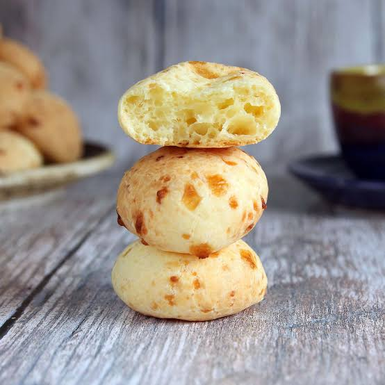

Pandebono (or pan de bono) is a traditional Colombian cheese bread originally from the Valle del Cauca department.
Ingredients
- 3/4 pound Cheese
- 2 tbsp Cornmeal Precooked, yellow
- 2 tbsp Sugar
- 1 tsp Salt
- 1 Egg
- Vegetable Oil
Steps
- Place the cheese, cassava starch, cornmeal, sugar, and salt in the food processor and mix 15 seconds. Add the egg and process 2 minutes more. The mixture will leave the sides of the food processor after 1 minute; continue mixing until you dont feel or see the cheese and the mixture is soft.
- Take dough by tablespoonfuls and form with your hands into little balls. Can be made in ring form too.
- Preheat the oven to 475F. Spray or lightly butter a baking sheet or mini-cupcake mold, and place the pandebonos there.
- Place the baking sheets or molds on the upper rack in the oven, close the door and immediately lower the temperature to 425F. Bake for 10 to 15 minutes, or until the bottom is golden. If they are getting too dark on the bottom, place a second sheet underneath.
- Serve warm from the oven.
Home